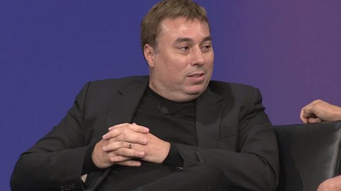

|
Vous l'avez sûrement déjà compris Chris Roberts est un passionné de l'espace et avec Star Citizen, il ne dérogera pas à la règle puisqu'il s'agit encore une fois d'un simulateur spatial pour PC. Il ne déroge pas à la règle ? Quoique... En effet, Star Citizen est prévu pour être un MMO dans un univers persistant. Les joueurs prennent la direction qu'ils souhaitent : contrebandier, marchand, pirate, chasseur de primes ou encore explorateur, il y en a pour tous les goûts. Le but de Chris Roberts et de l'équipe de développement est de créer un immense jeu bac à sable dans lequel le joueur pourra évoluer comme il le veut. Explorer des planètes ou encore aller à l'abordage d'un vaisseau afin de le capturer ou tout simplement établir des échanges commerciaux, le soft promet une étendue de possibilités quasi illimitées.
 Chris RobertsStar Citizen n'est clairement pas un MMO tel qu'on peut en avoir l'habitude aujourd'hui. Comme dirait Chris "Dites au revoir aux MMO basés sur les systèmes de niveaux et de classes.". Ici pas de restriction, le joueur n'a pas à se limiter à une classe ou à un système de niveaux puisqu'il n'y en a pas. Sa seule limitation sera sa capacité à piloter. Que l'on veuille être un marchand pilotant son transporteur, un militaire ou un pirate, ou encore qu'on veuille un petit vaisseau de chasse ou un mastodonte de plusieurs centaines de mètres de long, tout est permis. Chris avait d'ailleurs expliqué, lors de sa première présentation du jeu, qu’il n'y aurait pas de grosses mises à jour mensuelles comme sur beaucoup de MMO. Le but étant d'en faire de petites, de manière hebdomadaire ou bi-hebdomadaire, afin que le contenu soit toujours évolutif tout en gardant la main sur ce qu'il se passe dans cet univers. Star Citizen contiendra aussi une campagne solo / coop, le Squadron 42, escadron en français. Le joueur sera donc plongé dans une histoire évoluant en fonction de ses choix et compétences de pilote. Cette campagne est prévue pour accueillir 62 missions qui auront une grande importance. En effet, une fois celles-ci finies il sera normalement possible d'importer son personnage dans le monde persistant et acquérir le statut de citoyen puisqu'on aura accompli son service militaire. Ce statut accordera des droits spéciaux mais pourra poser problème face à certains. Trailer de Squadron 42Côté technique le jeu tourne sous le lumberyard, l'équipe souhaite réaliser un niveau d'immersion encore jamais atteint, tant en termes technique qu'en termes de gameplay. Chris Roberts et son équipe veulent que visuellement le jeu soit du jamais vu mais en plus que le gameplay soit extrêmement poussé et le pilotage des vaisseaux orienté simulation. D'ailleurs l'équipe travaille et mise beaucoup sur l'intégration de l'Oculus Rift, qui ici, devrait prendre tout son sens et son intérêt. Le but dans Star Citizen est d'avoir un univers vivant, avec une économie poussée impactant non seulement sur les joueurs mais aussi sur l'évolution de l'univers. |